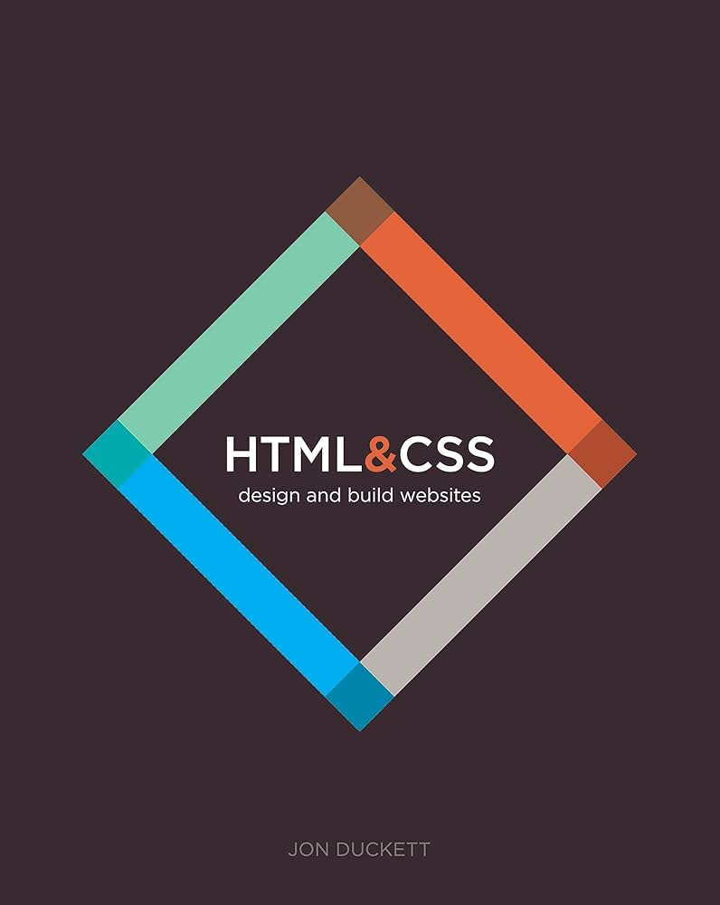
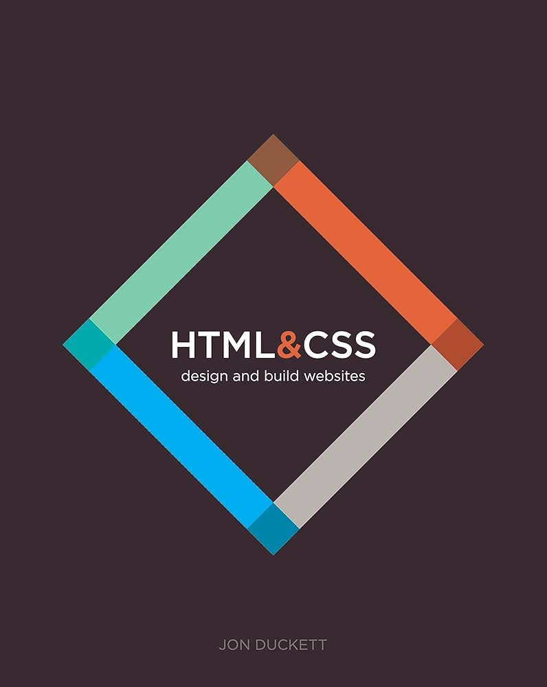
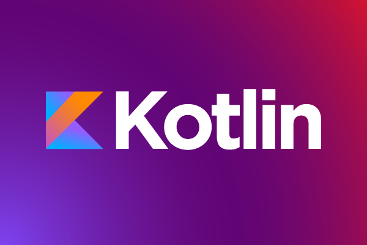
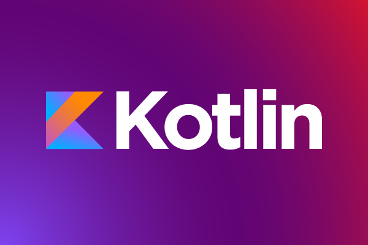

 


Software Development Processes
The software development process consists of many different stages and requires discipline. The importance of each stage directly affects the success of the project. In general, it consists of analysis, design, coding, testing and maintenance stages.Each project presents different challenges and opportunities. Therefore, flexibility and adaptability are among the most important skills of software developers. I wish you success in your software development journey!